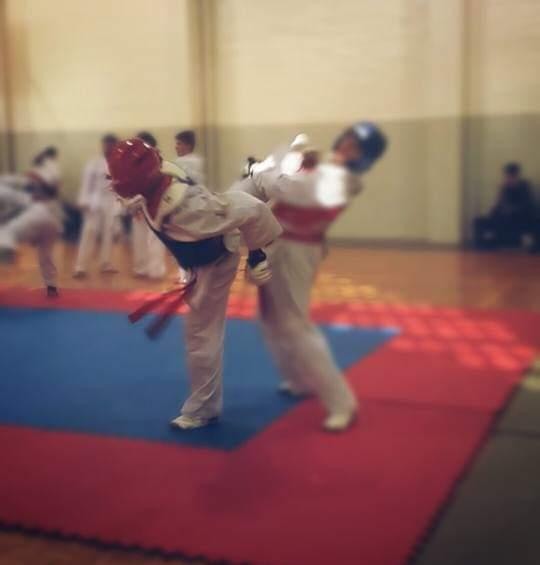
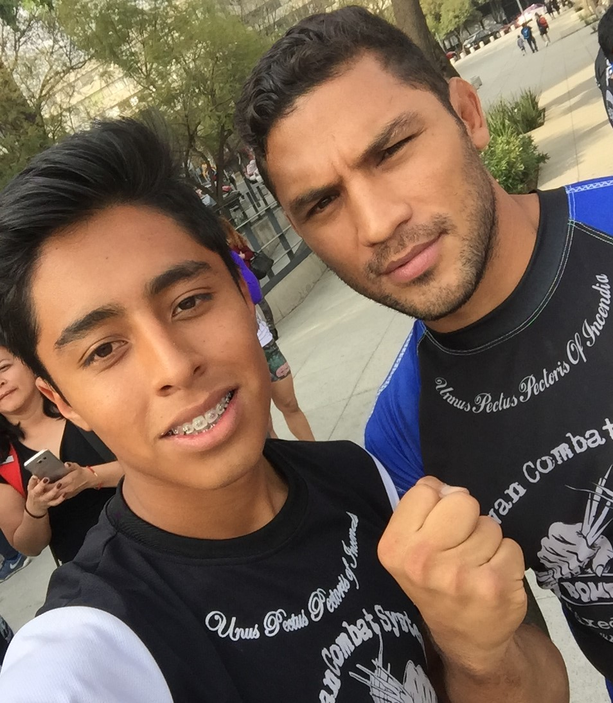
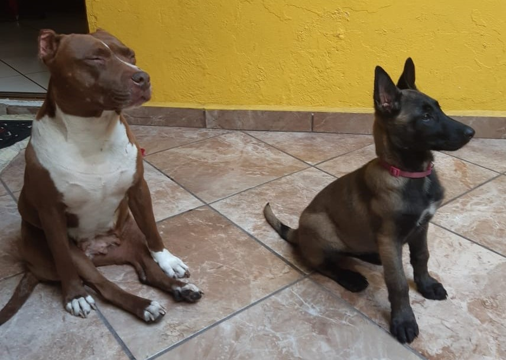
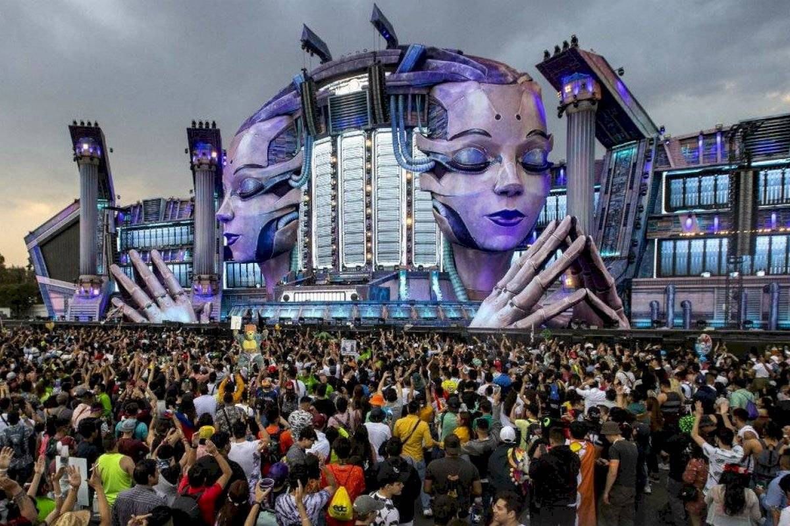

P A S A T I E M P O S F A M I L I A D E P O R T E C I R C U L O S O C I A L
Pasar tiempo con mi familia es algo que considero indispensable y parte de mi estilo de vida, ya que en este momento no vivo con ellos, es importante aprovechar cada momento.
Mi familia esta conformada por mis dos padres y mi hermano menor, mi padre actualmete trabaja en una empresa ,mi mamá tiene su propio negocio y mi hermano se encuentra cursando el quinto año de prepa.


Apasionado de los deportes de contacto personal desde niño. A los 6 años comencé a prácticar Taekwondo, obteniendo la cinta negra a los 10 años, volví a tomar el deporte cuando entre a la preparatoria, la cúal tenia un equipo donde competí en dos ocasiones en los juegos Interprepas.
Posteriormente continue practicando judo y kickboxing en una escuela particular durante 4 años, compitiendo en diferentes torneos, ademas tuve la oportunidad de tomar clases con excelentes peleadores. Durante una compentecia tuve un accidente, fracturandome el codo por lo que tuve que abandonar el deporte un lardo tiempo.
Desde hace 3 años hasta la fecha practico box en la UNAM, llevo dos años perteciendo el equipo representativo, participando en los juegos Universitarios así como en torneos externos.


En mis tiempos libres me gusta pasar el rato con mis perros, ya que solo los veo los fines de semana. La mayor parte del tiempo me gusta entrenar a mis perros, enseñarle trucos y que obedezcan ciertas intrucciones, así como salir a correr con ellos en las mañanas.
Apasionado de las artes, principalmente de la música y el cine. Los conciertso de cualquier genero y tipo de música son una de las cosas que más disfruto. Ir al cine es una de mis actividades favoritas y más relajantes que hago comunmente en las tardes, las peliculas de acción y de terror son mis preferidas.
 Pasar tiempo con mis amigos es algo que realmente disfruto, la mayoría estudia en CU por lo que, ir a comer o salir a bailar son actidades que hacemos usualmente. Viajar y salir a conocer nuevos lugares es uno de mis pasatiempos favoritos y más si lo hago con mis amigos
Pasar tiempo con mis amigos es algo que realmente disfruto, la mayoría estudia en CU por lo que, ir a comer o salir a bailar son actidades que hacemos usualmente. Viajar y salir a conocer nuevos lugares es uno de mis pasatiempos favoritos y más si lo hago con mis amigos